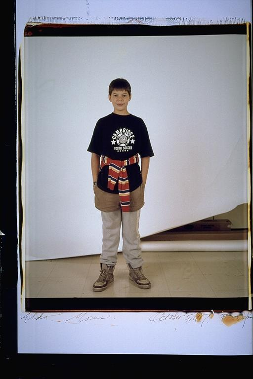

Aldo: This shirt reminds me that I was part of this great soccer league. It was called Cambridge Youth Soccer. Me, along with almost everyone I grew up with, played soccer from age eight, until maybe fourteen or fifteen, on the same team. It was like our lives revolved around soccer. We all practiced twice a week, then had games on the weekend. After games, it was pizza, and then touch football outside. We played soccer religiously, we never missed games. In fact all week, since we all went to school together, we hyped ourselves up for a game. It was really the most fun I ever had playing sports. It was a great way to socialize, and get to know eachother.
